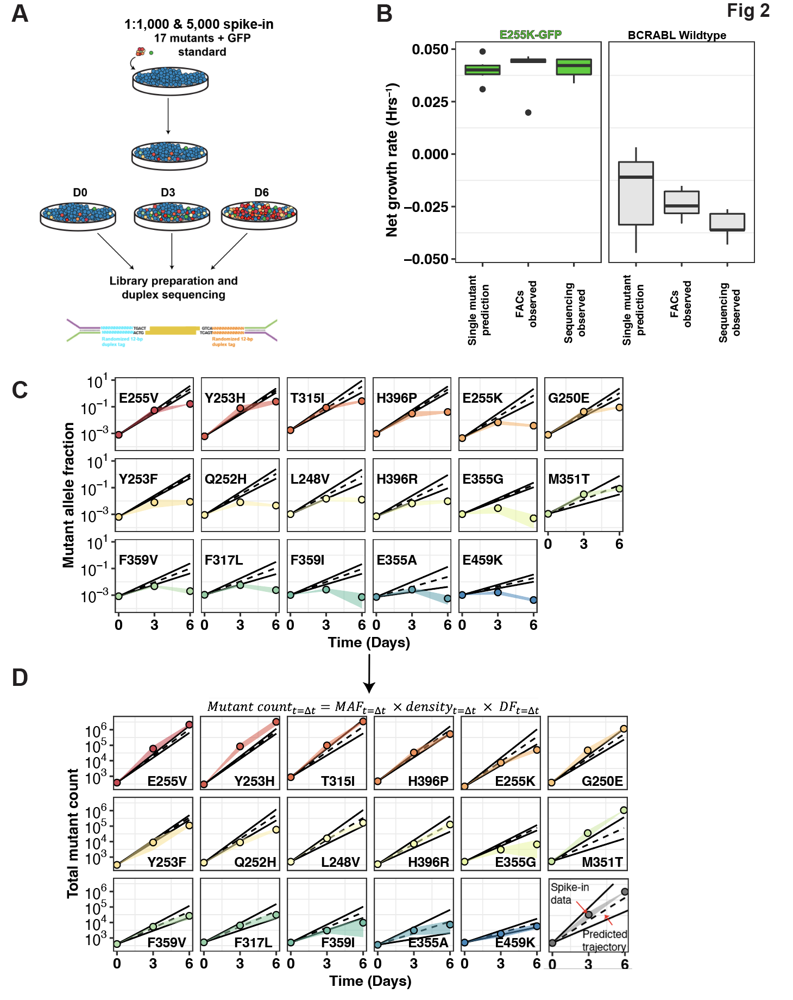
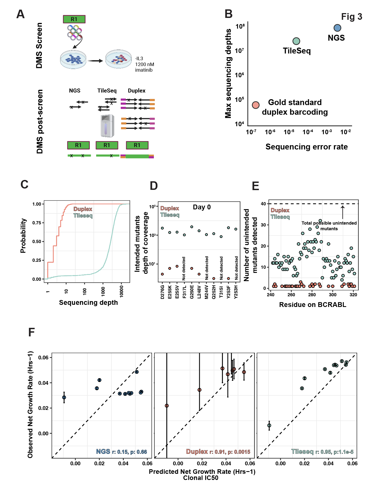

Home
Last updated: 2025-06-29
Checks: 1 1
Knit directory: abl_dms/
This reproducible R Markdown analysis was created with workflowr (version 1.6.2). The Checks tab describes the reproducibility checks that were applied when the results were created. The Past versions tab lists the development history.
The R Markdown file has unstaged changes. To know which version of
the R Markdown file created these results, you’ll want to first commit
it to the Git repo. If you’re still working on the analysis, you can
ignore this warning. When you’re finished, you can run
wflow_publish to commit the R Markdown file and build the
HTML.
Great! You are using Git for version control. Tracking code development and connecting the code version to the results is critical for reproducibility.
The results in this page were generated with repository version e047290. See the Past versions tab to see a history of the changes made to the R Markdown and HTML files.
Note that you need to be careful to ensure that all relevant files for
the analysis have been committed to Git prior to generating the results
(you can use wflow_publish or
wflow_git_commit). workflowr only checks the R Markdown
file, but you know if there are other scripts or data files that it
depends on. Below is the status of the Git repository when the results
were generated:
Ignored files:
Ignored: .DS_Store
Ignored: .Rproj.user/
Ignored: analysis/.DS_Store
Ignored: analysis/.Rhistory
Ignored: code/.DS_Store
Ignored: data/.DS_Store
Ignored: data/Twinstrand/.DS_Store
Ignored: output/.DS_Store
Ignored: output/Enrichmentsimulations/.DS_Store
Ignored: output/spikeins_figures/.DS_Store
Untracked files:
Untracked: ErrorRates_dataparser_region1.Rmd
Untracked: ErrorRates_dataparser_region1.html
Untracked: analysis/ErrorRates_Tileseq_NGS_Duplex_SSCS.Rmd
Untracked: analysis/Homepage_errorrates.Rmd
Untracked: code/compare_samples.R
Untracked: code/compare_screens.R
Untracked: code/compare_screens_archive.R
Untracked: code/compare_screens_twosamples.R
Untracked: code/cosmic_data_adder.R
Untracked: code/depth_finder.R
Untracked: code/is_intended_adder.R
Untracked: code/merge_samples.R
Untracked: code/merge_samples_twosamples.R
Untracked: code/plotting/
Untracked: code/res_residues_adder.R
Untracked: code/resmuts_adder.R
Untracked: code/shortest_codon_finder.R
Untracked: code/variants_parser.R
Untracked: data/ABL1AppOutput/
Untracked: data/Consensus_Data/
Untracked: data/Refs/
Untracked: data/codon_table.csv
Untracked: data/twinstrand_maf_merge_formanuscript.csv
Untracked: data/twinstrand_simple_melt_merge copy.csv
Untracked: output/ABLEnrichmentScreens/
Untracked: output/errorrates_figures/
Untracked: output/spikeins_figures/dosing_normalization_stdevs_paired.pdf
Unstaged changes:
Modified: analysis/index.Rmd
Modified: analysis/spikeins_growthrates.Rmd
Deleted: dosing_normalization_stdevs_paired.pdf
Note that any generated files, e.g. HTML, png, CSS, etc., are not included in this status report because it is ok for generated content to have uncommitted changes.
These are the previous versions of the repository in which changes were
made to the R Markdown (analysis/index.Rmd) and HTML
(docs/index.html) files. If you’ve configured a remote Git
repository (see ?wflow_git_remote), click on the hyperlinks
in the table below to view the files as they were in that past version.
| File | Version | Author | Date | Message |
|---|---|---|---|---|
| Rmd | e047290 | haiderinam | 2025-06-23 | Initial commit |
| html | e047290 | haiderinam | 2025-06-23 | Initial commit |
| Rmd | 253724b | haiderinam | 2025-06-21 | Start workflowr project. |
BCR ABL Deep Mutational Scan
- Click below to view our spike-in experiments. These are analyses of
the growth of 17 mutant standards under imatinib at low allele
frequencies.

- Click below to view various computational improvements including:
logistic regressions of dose-response curves, predicting the effect on
fitness of dosing errors.

- Click here to view DMS
analyses.

- Click here view
analyses interpreting variants of uncertain drug resistance in
ABL.

- Click here to view base
editing analyses.

Click here to view our validation IC50s with hits from the DMS screens.
Click here to view our analyses on error rates in Tileseq vs NGS vs Duplex sequencing.

Click here to view our analyses on the error rates in spike-in data when using LFCs vs Net growth rates.

Click here to be redirected to the github page that contains all the data and analysis rmd files.
What is in each directory:
- Data: contains data downloaded prior to
analyses.
- Output: contains data that the code makes
- Analysis: contains your Rmarkdown files with the
code.
- Docs: contain the html output from the Rmd files in
the analysis directory.
- Code: contains .R files that are functions that the Rmd files in the analysis folder use.